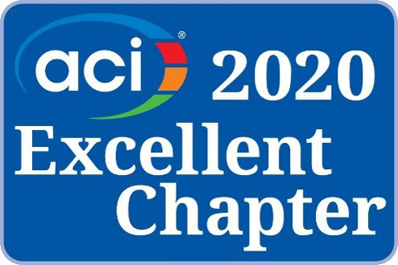
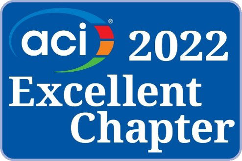
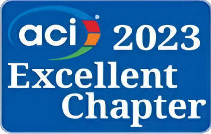
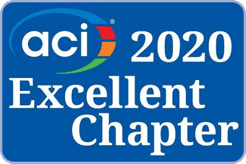
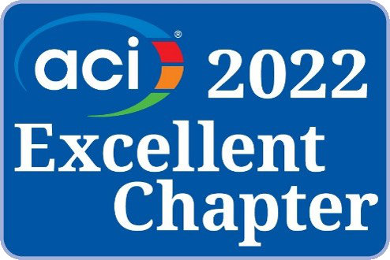
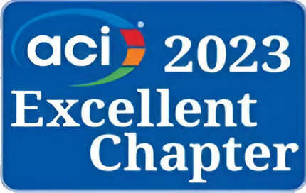

El American Concrete Institute (ACI) es una sociedad técnica y educativa, constituida sin fines de lucro desde 1904, y es la principal autoridad de América y del mundo en tecnología del concreto.
El ACI es un foro para la discusión de todos los asuntos relacionados con el concreto y el desarrollo de soluciones a problemas con Recursos Técnicos y Programas Educativos, tanto en el Diseño, Construcción, Mantenimiento y Rehabilitación, así como Materiales para el Concreto.
Los capítulos son representaciones locales del ACI. Los capítulos son entidades jurídicas distintas e independientes. Existen capítulos del ACI en todo el mundo.
Los capítulos están formados por arquitectos, ingenieros, consultores, contratistas, educadores, proveedores de materiales, proveedores de equipos, propietarios de empresas y estudiantes; en otras palabras, cualquier persona interesada en el concreto.
Además, los capítulos también organizan convenciones con temas afines al concreto, realizan certificaciones del ACI, seminarios educativos, programas de premios de proyectos y eventos sociales con el objetivo de promover el conocimiento del concreto y crear una comunidad concreta local.
La participación en un capítulo local puede ser muy gratificante en términos de adquirir un mejor conocimiento técnico, además para hacer contactos con los lideres de la comunidad del concreto.
Noviembre 2016 Nombramiento: Capitulo Noroeste de México por el ACI Internacional. Enero 2017 Constitución como Asociación Civil: ACI México Capitulo Noroeste, A.C.
Adquirir y difundir el conocimiento del concreto de acuerdo a los lineamientos del ACI Internacional en el territorio Noroeste de México.
Realizar actividades que nos permitan cumplir nuestra Misión en la región Noroeste de México. Siendo el pilar de referencia respecto al conocimiento y manejo del concreto, la fuente de información para quien requiera conocimiento y de inspiración de quien lo tenga y esté dispuesto a compartirlo.
Reconocimiento EXCELLENT CHAPTER otorgado al Capitulo Noroeste de México por el AMERICAN CONCRETE INSTITUTE. Dicho reconocimiento es entregado en la convención de primavera del ACI.
 




